本文我们大概讲一下istio的介绍，istio有哪些功能以及istio的一些设计架构原理。
istio介绍
istio 解决了开发人员和运维人员所面临的从单体应用向分布式微服务架构转变的挑战。了解它是如何做到这一点的可以让我们更详细地理解 Istio 的服务网格。
术语服务网格用来描述组成这些应用程序的微服务网络以及它们之间的交互。随着服务网格的规模和复杂性不断的增长，它将会变得越来越难以理解和管理。它的需求包括服务发现、负载均衡、故障恢复、度量和监控等。服务网格通常还有更复杂的运维需求，比如 A/B 测试、金丝雀发布、速率限制、访问控制和端到端认证。
Istio 提供了对整个服务网格的行为洞察和操作控制的能力，以及一个完整的满足微服务应用各种需求的解决方案。
istio从之前的版本到现在的最新版本1.8版本有很大的变更，这里我们后续介绍下istio的1.5.1版本功能及其使用。
istio提供的功能
通过负载均衡、服务间的身份验证、监控等方法，Istio 可以轻松地创建一个已经部署了服务的网络，而服务的代码只需很少更改甚至无需更改。通过在整个环境中部署一个特殊的 sidecar 代理为服务添加 Istio 的支持，而代理会拦截微服务之间的所有网络通信，然后使用其控制平面的功能来配置和管理 Istio，这包括：
- 为 HTTP、gRPC、WebSocket 和 TCP 流量自动负载均衡。
- 通过丰富的路由规则、重试、故障转移和故障注入对流量行为进行细粒度控制。
- 可插拔的策略层和配置 API，支持访问控制、速率限制和配额。
- 集群内（包括集群的入口和出口）所有流量的自动化度量、日志记录和追踪。
- 在具有强大的基于身份验证和授权的集群中实现安全的服务间通信。
- Istio 为可扩展性而设计，可以满足不同的部署需求。
istio特性
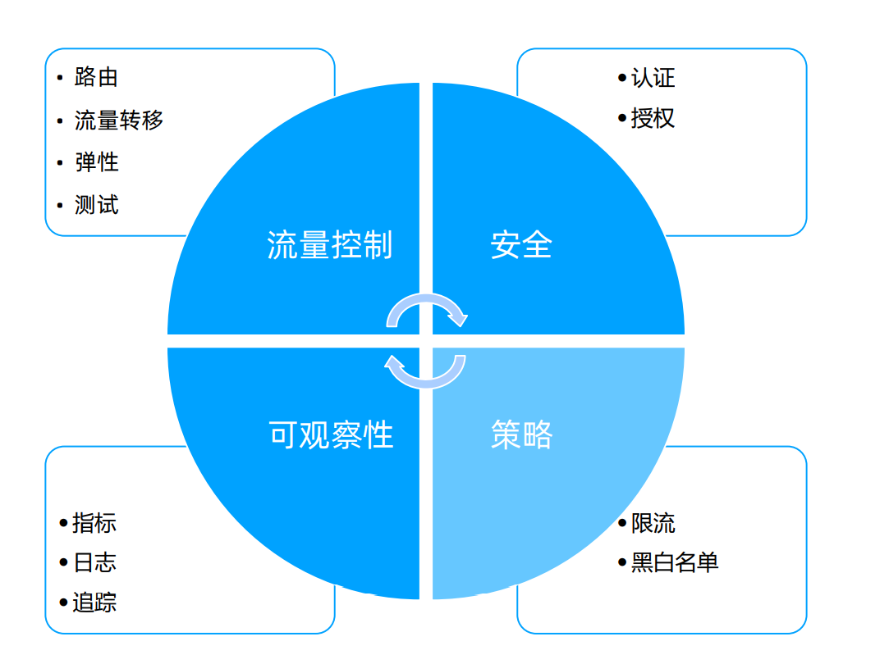
Istio 以统一的方式提供了许多跨服务网络的关键功能：
- 流量管理
Istio 简单的规则配置和流量路由允许您控制服务之间的流量和 API 调用过程。Istio 简化了服务级属性（如熔断器、超时和重试）的配置，并且让它轻而易举的执行重要的任务（如 A/B 测试、金丝雀发布和按流量百分比划分的分阶段发布）。
有了更好的对流量的可视性和开箱即用的故障恢复特性，您就可以在问题产生之前捕获它们，无论面对什么情况都可以使调用更可靠，网络更健壮。
- 安全
Istio 的安全特性解放了开发人员，使其只需要专注于应用程序级别的安全。Istio 提供了底层的安全通信通道，并为大规模的服务通信管理认证、授权和加密。有了 Istio，服务通信在默认情况下就是受保护的，可以让您在跨不同协议和运行时的情况下实施一致的策略——而所有这些都只需要很少甚至不需要修改应用程序。
Istio 是独立于平台的，可以与 Kubernetes（或基础设施）的网络策略一起使用。但它更强大，能够在网络和应用层面保护pod到 pod 或者服务到服务之间的通信。
- 可观察性
Istio 健壮的追踪、监控和日志特性让您能够深入的了解服务网格部署。通过 Istio 的监控能力，可以真正的了解到服务的性能是如何影响上游和下游的；而它的定制 Dashboard 提供了对所有服务性能的可视化能力，并让您看到它如何影响其他进程。
Istio 的 Mixer 组件负责策略控制和遥测数据收集。它提供了后端抽象和中介，将一部分 Istio 与后端的基础设施实现细节隔离开来，并为运维人员提供了对网格与后端基础实施之间交互的细粒度控制。
所有这些特性都使您能够更有效地设置、监控和加强服务的 SLO。当然，底线是您可以快速有效地检测到并修复出现的问题。
istio架构
istio的1.0版本，架构如下，控制面分为Pilot、Citadel、Mixer，数据面还是采用的envoy
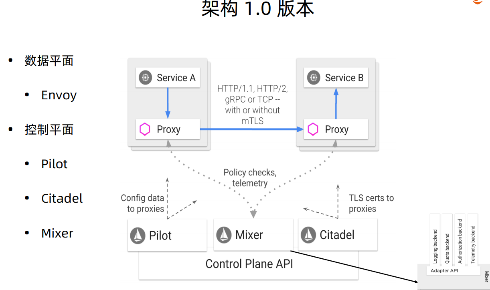
istio的1.5版本有一些变更，控制面整合为一个istiod，并且去除了Mixer，还有一些问题修改和性能的提升
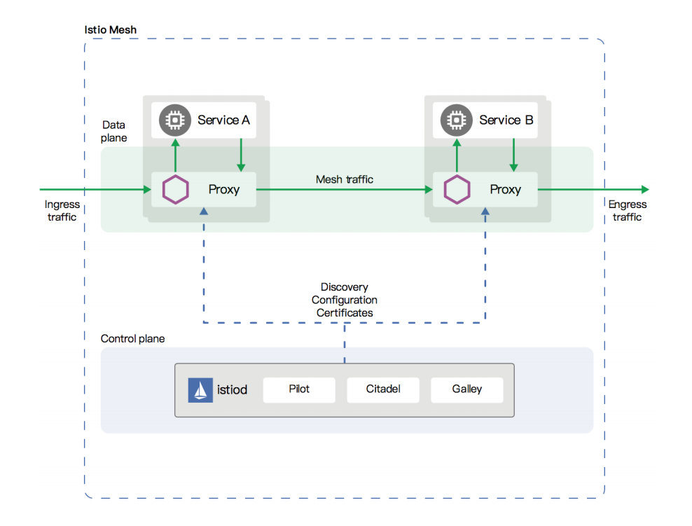
istio的核心资源
虚拟服务（Virtual Service）
虚拟服务（Virtual Service） 和目标规则（Destination Rule） 是 Istio 流量路由功能的关键拼图。虚拟服务让您配置如何在服务网格内将请求路由到服务，这基于 Istio 和平台提供的基本的连通性和服务发现能力。每个虚拟服务包含一组路由规则，Istio 按顺序评估它们，Istio 将每个给定的请求匹配到虚拟服务指定的实际目标地址。您的网格可以有多个虚拟服务，也可以没有，取决于您的使用场景。
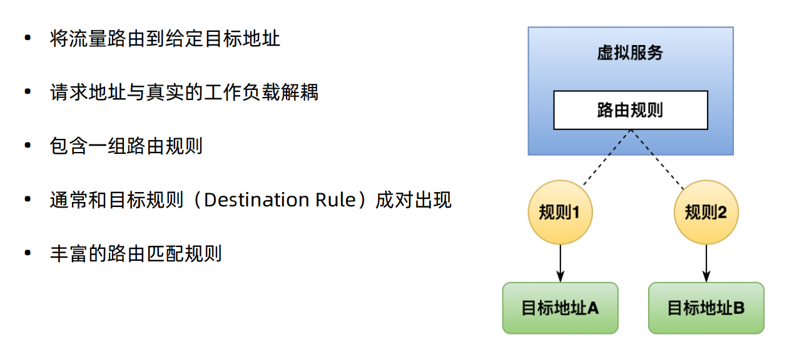
下面的虚拟服务根据请求是否来自特定的用户，把它们路由到服务的不同版本。
1 | apiVersion: networking.istio.io/v1alpha3 |
目标规则（Destination Rule）
与虚拟服务一样，目标规则也是 Istio 流量路由功能的关键部分。您可以将虚拟服务视为将流量如何路由到给定目标地址，然后使用目标规则来配置该目标的流量。在评估虚拟服务路由规则之后，目标规则将应用于流量的“真实”目标地址。
特别是，您可以使用目标规则来指定命名的服务子集，例如按版本为所有给定服务的实例分组。然后可以在虚拟服务的路由规则中使用这些服务子集来控制到服务不同实例的流量。
目标规则还允许您在调用整个目的地服务或特定服务子集时定制 Envoy 的流量策略，比如您喜欢的负载均衡模型、TLS 安全模式或熔断器设置。在目标规则参考中可以看到目标规则选项的完整列表
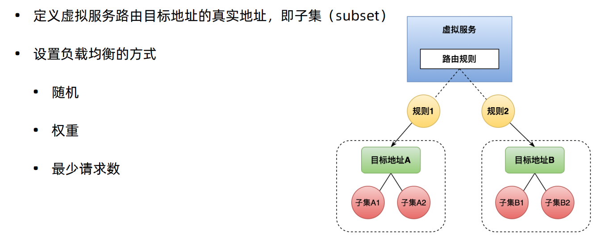
在下面的示例中，目标规则为 my-svc 目标服务配置了 3 个具有不同负载均衡策略的子集：
1 | apiVersion: networking.istio.io/v1alpha3 |
网关（Gateway）
使用网关为网格来管理入站和出站流量，可以让您指定要进入或离开网格的流量。网关配置被用于运行在网格边界的独立 Envoy 代理，而不是服务工作负载的 sidecar 代理。
与 Kubernetes Ingress API 这种控制进入系统流量的其他机制不同，Istio 网关让您充分利用流量路由的强大能力和灵活性。您可以这么做的原因是 Istio 的网关资源可以配置 4-6 层的负载均衡属性，如对外暴露的端口、TLS 设置等。作为替代应用层流量路由（L7）到相同的 API 资源，您绑定了一个常规的 Istio 虚拟服务到网关。这让您可以像管理网格中其他数据平面的流量一样去管理网关流量。
网关主要用于管理进入的流量，但您也可以配置出口网关。出口网关让您为离开网格的流量配置一个专用的出口节点，这可以限制哪些服务可以或应该访问外部网络，或者启用出口流量安全控制为您的网格添加安全性。您也可以使用网关配置一个纯粹的内部代理。
Istio 提供了一些预先配置好的网关代理部署（istio-ingressgateway 和 istio-egressgateway）供您使用——如果使用我们的演示安装它们都已经部署好了；如果使用默认或 sds 配置文件则只部署了入口网关。可以将您自己的网关配置应用到这些部署或配置您自己的网关代理。
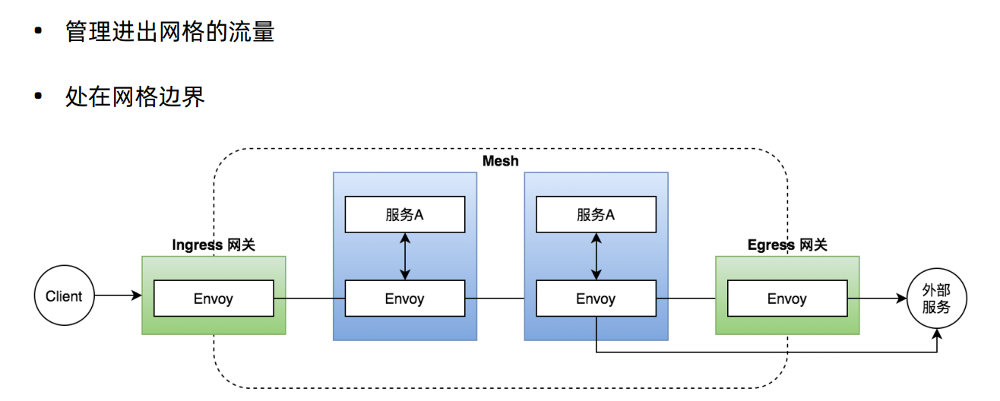
下面的示例展示了一个外部 HTTPS 入口流量的网关配置：
1 | apiVersion: networking.istio.io/v1alpha3 |
这个网关配置让 HTTPS 流量从 ext-host.example.com 通过 443 端口流入网格，但没有为请求指定任何路由规则。为想要工作的网关指定路由，您必须把网关绑定到虚拟服务上。正如下面的示例所示，使用虚拟服务的 gateways 字段进行设置：
1 | apiVersion: networking.istio.io/v1alpha3 |
然后就可以为出口流量配置带有路由规则的虚拟服务。
服务入口（Service Entry）
使用服务入口（Service Entry） 来添加一个入口到 Istio 内部维护的服务注册中心。添加了服务入口后，Envoy 代理可以向服务发送流量，就好像它是网格内部的服务一样。配置服务入口允许您管理运行在网格外的服务的流量，它包括以下几种能力：
- 为外部目标 redirect 和转发请求，例如来自 web 端的 API 调用，或者流向遗留老系统的服务。
- 为外部目标定义重试、超时和故障注入策略。
- 添加一个运行在虚拟机的服务来扩展您的网格。
- 从逻辑上添加来自不同集群的服务到网格，在 Kubernetes 上实现一个多集群 Istio 网格。
您不需要为网格服务要使用的每个外部服务都添加服务入口。默认情况下，Istio 配置 Envoy 代理将请求传递给未知服务。但是，您不能使用 Istio 的特性来控制没有在网格中注册的目标流量。
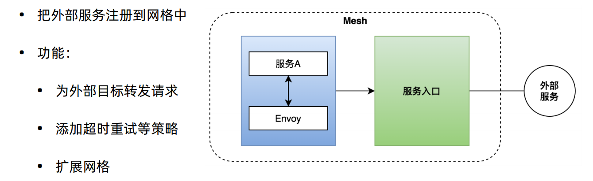
下面示例的 mesh-external 服务入口将 ext-resource 外部依赖项添加到 Istio 的服务注册中心：
1 | apiVersion: networking.istio.io/v1alpha3 |
您指定的外部资源使用 hosts 字段。可以使用完全限定名或通配符作为前缀域名。
您可以配置虚拟服务和目标规则，以更细粒度的方式控制到服务入口的流量，这与网格中的任何其他服务配置流量的方式相同。例如，下面的目标规则配置流量路由以使用双向 TLS 来保护到 ext-svc.example.com 外部服务的连接，我们使用服务入口配置了该外部服务：
1 | apiVersion: networking.istio.io/v1alpha3 |
Sidecar
默认情况下，Istio 让每个 Envoy 代理都可以访问来自和它关联的工作负载的所有端口的请求，然后转发到对应的工作负载。您可以使用 sidecar 配置去做下面的事情：
- 微调 Envoy 代理接受的端口和协议集。
- 限制 Envoy 代理可以访问的服务集合。
您可能希望在较庞大的应用程序中限制这样的 sidecar 可达性，配置每个代理能访问网格中的任意服务可能会因为高内存使用量而影响网格的性能。
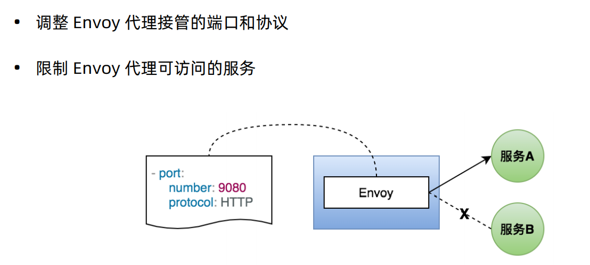
网络弹性和测试
除了为您的网格导流之外，Istio 还提供了可选的故障恢复和故障注入功能，您可以在运行时动态配置这些功能。使用这些特性可以让您的应用程序运行稳定，确保服务网格能够容忍故障节点，并防止局部故障级联影响到其他节点。
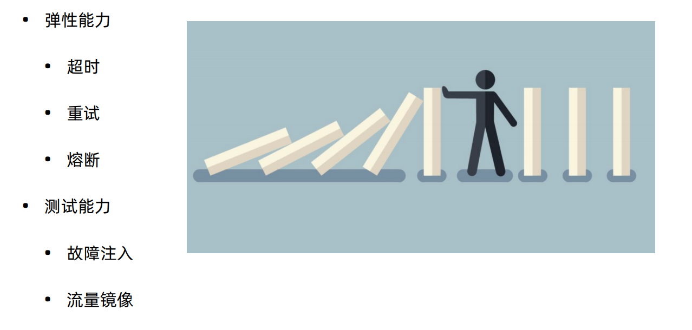
超时
超时是 Envoy 代理等待来自给定服务的答复的时间量，以确保服务不会因为等待答复而无限期的挂起，并在可预测的时间范围内调用成功或失败。HTTP 请求的默认超时时间是 15 秒，这意味着如果服务在 15 秒内没有响应，调用将失败。
对于某些应用程序和服务，Istio 的缺省超时可能不合适。例如，超时太长可能会由于等待失败服务的回复而导致过度的延迟；而超时过短则可能在等待涉及多个服务返回的操作时触发不必要地失败。为了找到并使用最佳超时设置，Istio 允许您使用虚拟服务按服务轻松地动态调整超时，而不必修改您的业务代码。下面的示例是一个虚拟服务，它对 ratings 服务的 v1 子集的调用指定 10 秒超时：
1 | apiVersion: networking.istio.io/v1alpha3 |
重试
重试设置指定如果初始调用失败，Envoy 代理尝试连接服务的最大次数。通过确保调用不会因为临时过载的服务或网络等问题而永久失败，重试可以提高服务可用性和应用程序的性能。重试之间的间隔（25ms+）是可变的，并由 Istio 自动确定，从而防止被调用服务被请求淹没。HTTP 请求的默认重试行为是在返回错误之前重试两次。
与超时一样，Istio 默认的重试行为在延迟方面可能不适合您的应用程序需求（对失败的服务进行过多的重试会降低速度）或可用性。您可以在虚拟服务中按服务调整重试设置，而不必修改业务代码。您还可以通过添加每次重试的超时来进一步细化重试行为，并指定每次重试都试图成功连接到服务所等待的时间量。下面的示例配置了在初始调用失败后最多重试 3 次来连接到服务子集，每个重试都有 2 秒的超时。
1 | apiVersion: networking.istio.io/v1alpha3 |
熔断器
熔断器是 Istio 为创建具有弹性的微服务应用提供的另一个有用的机制。在熔断器中，设置一个对服务中的单个主机调用的限制，例如并发连接的数量或对该主机调用失败的次数。一旦限制被触发，熔断器就会“跳闸”并停止连接到该主机。使用熔断模式可以快速失败而不必让客户端尝试连接到过载或有故障的主机。
熔断适用于在负载均衡池中的“真实”网格目标地址，您可以在目标规则中配置熔断器阈值，让配置适用于服务中的每个主机。下面的示例将 v1 子集的reviews服务工作负载的并发连接数限制为 100：
1 | apiVersion: networking.istio.io/v1alpha3 |
故障注入
在配置了网络，包括故障恢复策略之后，可以使用 Istio 的故障注入机制来为整个应用程序测试故障恢复能力。故障注入是一种将错误引入系统以确保系统能够承受并从错误条件中恢复的测试方法。使用故障注入特别有用，能确保故障恢复策略不至于不兼容或者太严格，这会导致关键服务不可用。
与其他错误注入机制（如延迟数据包或在网络层杀掉 Pod）不同，Istio 允许在应用层注入错误。这使您可以注入更多相关的故障，例如 HTTP 错误码，以获得更多相关的结果。
您可以注入两种故障，它们都使用虚拟服务配置：
- 延迟：延迟是时间故障。它们模拟增加的网络延迟或一个超载的上游服务。
- 终止：终止是崩溃失败。他们模仿上游服务的失败。终止通常以 HTTP 错误码或 TCP 连接失败的形式出现。
例如，下面的虚拟服务为千分之一的访问 ratings 服务的请求配置了一个 5 秒的延迟：
1 | apiVersion: networking.istio.io/v1alpha3 |
istio安全设计
istio认证
Istio 提供两种类型的认证：
Peer authentication：用于服务到服务的认证，以验证进行连接的客户端。Istio 提供双向 TLS 作为传输认证的全栈解决方案，无需更改服务代码就可以启用它。这个解决方案：
- 为每个服务提供强大的身份，表示其角色，以实现跨群集和云的互操作性。
- 保护服务到服务的通信。
- 提供密钥管理系统，以自动进行密钥和证书的生成，分发和轮换。
Request authentication：用于最终用户认证，以验证附加到请求的凭据。 Istio 使用 JSON Web Token（JWT）验证启用请求级认证，并使用自定义认证实现或任何 OpenID Connect 的认证实现（例如下面列举的）来简化的开发人员体验。
- ORY Hydra
- Keycloak
- Auth0
- Firebase Auth
- Google Auth
您可以使用 peer 和 request 认证策略为在 Istio 网格中接收请求的工作负载指定认证要求。网格运维人员使用 .yaml 文件来指定策略。部署后，策略将保存在 Istio 配置存储中。Istio 控制器监视配置存储。
一有任何的策略变更，新策略都会转换为适当的配置，告知 PEP 如何执行所需的认证机制。控制平面可以获取公共密钥，并将其附加到配置中以进行 JWT 验证。或者，Istiod 提供了 Istio 系统管理的密钥和证书的路径，并将它们安装到应用程序 pod 用于双向 TLS。您可以在 PKI 部分中找到更多信息。
Istio 异步发送配置到目标端点。代理收到配置后，新的认证要求会立即生效。
发送请求的客户端服务负责遵循必要的认证机制。对于 peer authentication，应用程序负责获取 JWT 凭证并将其附加到请求。对于双向 TLS，Istio 会自动将两个 PEPs 之间的所有流量升级为双向 TLS。如果认证策略禁用了双向 TLS 模式，则 Istio 将继续在 PEPs 之间使用纯文本。要覆盖此行为，请使用 destination rules显式禁用双向 TLS 模式。您可以在双向 TLS 认证 中找到有关双向 TLS 如何工作的更多信息。
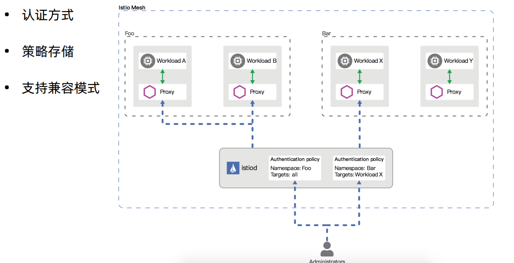
本节中提供了更多 Istio 认证策略方面的细节。正如认证架构中所说的，认证策略是对服务收到的请求生效的。要在双向 TLS 中指定客户端认证策略，需要在 DetinationRule 中设置 TLSSettings。TLS 设置参考文档中有更多这方面的信息。
和其他的 Istio 配置一样，可以用 .yaml 文件的形式来编写认证策略。部署策略使用 kubectl。 下面例子中的认证策略要求：与带有 app:reviews 标签的工作负载的传输层认证，必须使用双向 TLS：
1 | apiVersion: "security.istio.io/v1beta1" |
授权
Istio 的授权功能为网格中的工作负载提供网格、命名空间和工作负载级别的访问控制。这种控制层级提供了以下优点：
- 工作负载间和最终用户到工作负载的授权。
- 一个简单的 API：它包括一个单独的并且很容易使用和维护的 AuthorizationPolicy CRD。
- 灵活的语义：运维人员可以在 Istio 属性上定义自定义条件，并使用 DENY 和 ALLOW 动作。
- 高性能：Istio 授权是在 Envoy 本地强制执行的。
- 高兼容性：原生支持 HTTP、HTTPS 和 HTTP2，以及任意普通 TCP 协议。
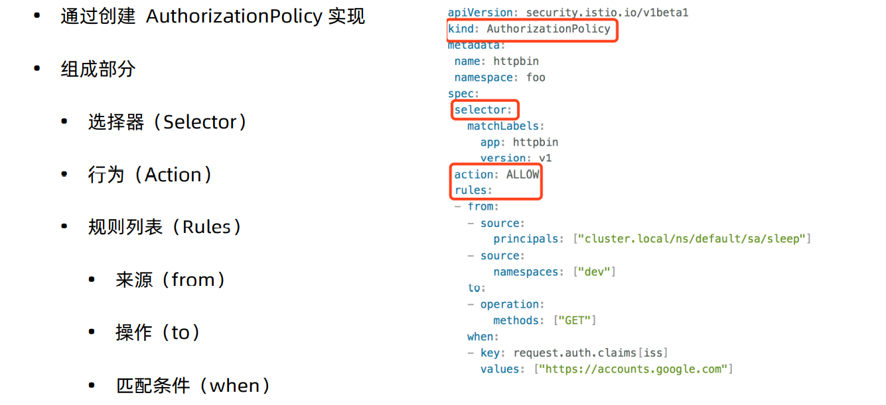
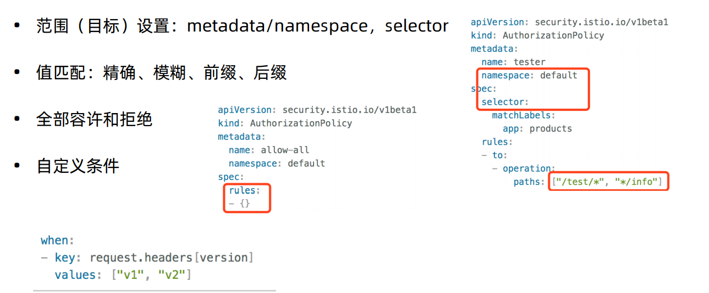
要配置授权策略，请创建一个 AuthorizationPolicy 自定义资源。 一个授权策略包括选择器（selector），动作（action） 和一个规则（rules）列表：
- selector 字段指定策略的目标
- action 字段指定允许还是拒绝请求
- rules 指定何时触发动作
- rules 下的 from 字段指定请求的来源
- rules 下的 to 字段指定请求的操作
- rules 下的 when 字段指定应用规则所需的条件
以下示例显示了一个授权策略，该策略允许两个源（服务帐号 cluster.local/ns/default/sa/sleep 和命名空间 dev），在使用有效的 JWT 令牌发送请求时，可以访问命名空间 foo 中的带有标签 app: httpbin 和 version: v1 的工作负载。
1 | apiVersion: security.istio.io/v1beta1 |
istio可观察性
Istio 为网格内所有的服务通信生成详细的遥测数据。这种遥测技术提供了服务行为的可观察性，使运维人员能够排查故障、维护和优化应用程序，而不会给服务的开发人员带来任何额外的负担。通过 Istio，运维人员可以全面了解到受监控的服务如何与其他服务以及 Istio 组件进行交互。
Istio 生成以下类型的遥测数据，以提供对整个服务网格的可观察性：
- 指标。Istio 基于 4 个监控的黄金标识（延迟、流量、错误、饱和）生成了一系列服务指标。Istio 还为网格控制平面提供了更详细的指标。除此以外还提供了一组默认的基于这些指标的网格监控仪表板。
- 分布式追踪。Istio 为每个服务生成分布式追踪 span，运维人员可以理解网格内服务的依赖和调用流程。
- 访问日志。当流量流入网格中的服务时，Istio 可以生成每个请求的完整记录，包括源和目标的元数据。此信息使运维人员能够将服务行为的审查控制到单个工作负载实例的级别。
指标
指标（Metric）提供了一种以聚合的方式监控和理解行为的方法。
为了监控服务行为，Istio 为服务网格中所有出入的服务流量都生成了指标。这些指标提供了关于行为的信息，例如总流量数、错误率和请求响应时间。
除了监控网格中服务的行为外，监控网格本身的行为也很重要。Istio 组件可以导出自身内部行为的指标，以提供对网格控制平面的功能和健康情况的洞察能力。
Istio 指标收集由运维人员配置来驱动。运维人员决定如何以及何时收集指标，以及指标本身的详细程度。这使得它能够灵活地调整指标收集来满足个性化需求。
代理级别指标
Istio 指标收集从 sidecar 代理（Envoy）开始。每个代理为通过它的所有流量（入站和出站）生成一组丰富的指标。代理还提供关于它本身管理功能的详细统计信息，包括配置信息和健康信息。
Envoy 生成的指标提供了资源（例如监听器和集群）粒度上的网格监控。因此，为了监控 Envoy 指标，需要了解网格服务和 Envoy 资源之间的连接。
Istio 允许运维人员在每个工作负载实例上选择生成和收集哪个 Envoy 指标。默认情况下，Istio 只支持 Envoy 生成的统计数据的一小部分，以避免依赖过多的后端服务，还可以减少与指标收集相关的 CPU 开销。然而，运维人员可以在需要时轻松地扩展收集到的代理指标集。这支持有针对性地调试网络行为，同时降低了跨网格监控的总体成本。
Envoy 文档包括了 Envoy 统计信息收集的详细说明。Envoy 统计里的操作手册提供了有关控制代理级别指标生成的更多信息。
代理级别指标的例子：
1 | envoy_cluster_internal_upstream_rq{response_code_class="2xx",cluster_name="xds-grpc"} 7163 |
服务级别指标
除了代理级别指标之外，Istio 还提供了一组用于监控服务通信的面向服务的指标。这些指标涵盖了四个基本的服务监控需求：延迟、流量、错误和饱和情况。Istio 带有一组默认的仪表板，用于监控基于这些指标的服务行为。
默认的 Istio 指标由 Istio 提供的配置集定义并默认导出到 Prometheus。运维人员可以自由地修改这些指标的形态和内容，更改它们的收集机制，以满足各自的监控需求。
收集指标任务为定制 Istio 指标生成提供了更详细的信息。
服务级别指标的使用完全是可选的。运维人员可以选择关闭指标的生成和收集来满足自身需要。
服务级别指标的例子：
1 | istio_requests_total{ |
控制平面指标
每一个 Istio 的组件（Pilot、Galley、Mixer）都提供了对自身监控指标的集合。这些指标容许监控 Istio 自己的行为（这与网格内的服务有所不同）。
有关这些被维护指标的更多信息，请查看每个组件的参考文档：
分布式追踪
分布式追踪通过监控流经网格的单个请求，提供了一种监控和理解行为的方法。追踪使网格的运维人员能够理解服务的依赖关系以及在服务网格中的延迟源。
Istio 支持通过 Envoy 代理进行分布式追踪。代理自动为其应用程序生成追踪 span，只需要应用程序转发适当的请求上下文即可。
Istio 支持很多追踪系统，包括 Zipkin、Jaeger、LightStep、Datadog。运维人员控制生成追踪的采样率（每个请求生成跟踪数据的速率）。这允许运维人员控制网格生成追踪数据的数量和速率。
更多关于 Istio 分布式追踪的信息可以在分布式追踪 FAQ 中找到。
Istio 为一个请求生成的分布式追踪数据：
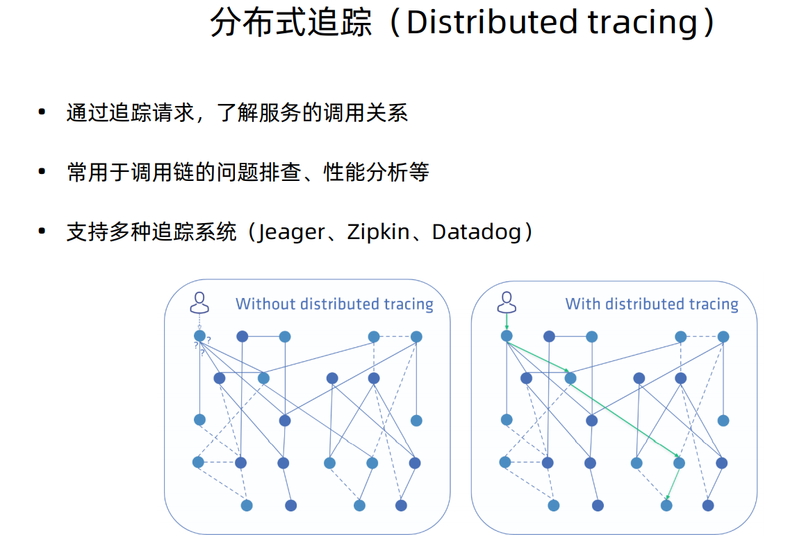
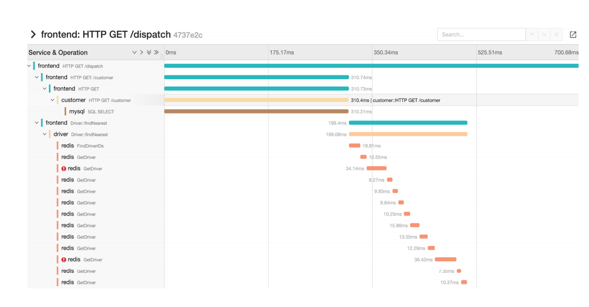
访问日志
访问日志提供了一种从单个工作负载实例的角度监控和理解行为的方法。
Istio 可以以一组可配置的格式集生成服务流量的访问日志，为运维人员提供日志记录的方式、内容、时间和位置的完全控制。Istio 向访问日志机制暴露了完整的源和目标元数据，允许对网络通信进行详细的审查。
访问日志可以在本地生成，或者导出到自定义的后端基础设施，包括 Fluentd。
更多关于访问日志的内容在收集日志和获取 Envoy 服务日志任务中提供。
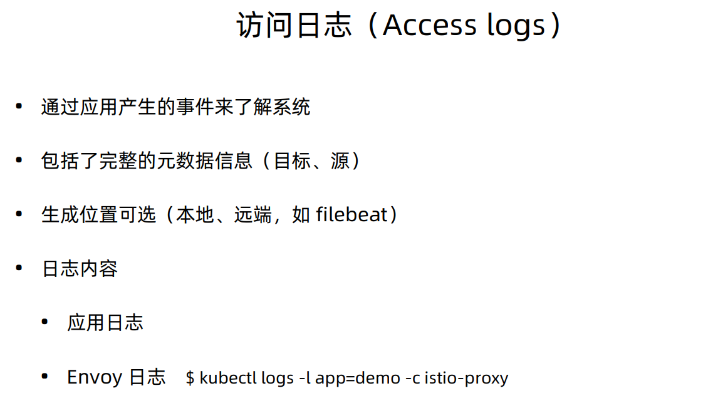
Istio 访问日志例子（JSON 格式）：
1 | {"level":"info","time":"2019-06-11T20:57:35.424310Z","instance":"accesslog.instance.istio-control","connection_security_policy":"mutual_tls","destinationApp":"productpage","destinationIp":"10.44.2.15","destinationName":"productpage-v1-6db7564db8-pvsnd","destinationNamespace":"default","destinationOwner":"kubernetes://apis/apps/v1/namespaces/default/deployments/productpage-v1","destinationPrincipal":"cluster.local/ns/default/sa/default","destinationServiceHost":"productpage.default.svc.cluster.local","destinationWorkload":"productpage-v1","httpAuthority":"35.202.6.119","latency":"35.076236ms","method":"GET","protocol":"http","receivedBytes":917,"referer":"","reporter":"destination","requestId":"e3f7cffb-5642-434d-ae75-233a05b06158","requestSize":0,"requestedServerName":"outbound_.9080_._.productpage.default.svc.cluster.local","responseCode":200,"responseFlags":"-","responseSize":4183,"responseTimestamp":"2019-06-11T20:57:35.459150Z","sentBytes":4328,"sourceApp":"istio-ingressgateway","sourceIp":"10.44.0.8","sourceName":"ingressgateway-7748774cbf-bvf4j","sourceNamespace":"istio-control","sourceOwner":"kubernetes://apis/apps/v1/namespaces/istio-control/deployments/ingressgateway","sourcePrincipal":"cluster.local/ns/istio-control/sa/default","sourceWorkload":"ingressgateway","url":"/productpage","userAgent":"curl/7.54.0","xForwardedFor":"10.128.0.35"} |

欢迎访问 Vashon 的博客，博客和文章在完善中，请大家耐心等待。 若有问题或者有好的建议欢迎留言，笔者看到之后会及时回复。

...
...